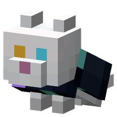
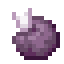
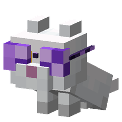
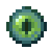
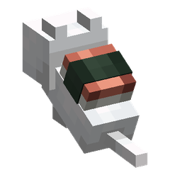
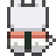
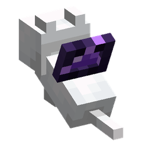
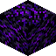
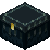

ネコの麦わら帽子


- 小麦
- 糸
149種類
小麦糸
👗 冬支度セット
 羊毛（色は自由）糸
羊毛（色は自由）糸
👗 紳士セット
 革糸
革糸 羊毛（色は自由）糸
羊毛（色は自由）糸
👗 魔女セット
 革紫色の染料
革紫色の染料
👗 王様セット

 金インゴットエメラルド
金インゴットエメラルド
 小さな花（種類は自由）糸
小さな花（種類は自由）糸 糸羊毛（色は自由）
糸羊毛（色は自由）
 ウサギの皮革
ウサギの皮革 革小麦
革小麦
 糸くり抜かれたカボチャ
糸くり抜かれたカボチャ
👗 サンタセット

 赤色の羊毛白色の羊毛
赤色の羊毛白色の羊毛 糸羊毛（色は自由）
糸羊毛（色は自由）
👗 フリルセット
 糸白色のカーペット
糸白色のカーペット
👗 トロピカルセット
 赤色のチューリップ糸
赤色のチューリップ糸
👗 ビジネスセット
 革黒色の染料
革黒色の染料
👗 ストリートセット
羊毛（色は自由）
👗 ミツバチセット

 ハニカム糸黒色の羊毛
ハニカム糸黒色の羊毛
👗 お姫様セット
 金インゴットダイヤモンド
金インゴットダイヤモンド
👗 イチゴセット

 オークの葉スイートベリー
オークの葉スイートベリー
✨ 暗いところを照らす
👗 天使セット
 金塊
金塊
👗 小悪魔セット
 ネザーウォート糸黒色の羊毛
ネザーウォート糸黒色の羊毛
👗 メイドセット
白色のカーペット黒色の羊毛
👗 学ランセット
黒色の羊毛金塊
👗 サメセット

 薄灰色の羊毛プリズマリンの欠片
薄灰色の羊毛プリズマリンの欠片
👗 クマセット

 茶色の羊毛生鮭
茶色の羊毛生鮭
👗 ウサギセット
白色の羊毛ウサギの皮
👗 オオカミセット

 灰色の羊毛骨
灰色の羊毛骨
👗 ブタセット

 桃色の羊毛生の豚肉
桃色の羊毛生の豚肉
👗 パンダセット
 白色の羊毛竹黒色の羊毛
白色の羊毛竹黒色の羊毛
👗 カエルセット

 黄緑色の羊毛スライムボール
黄緑色の羊毛スライムボール
👗 ペンギンセット
 黒色の羊毛生鱈
黒色の羊毛生鱈
👗 ライオンセット
 橙色の羊毛小麦
橙色の羊毛小麦
👗 恐竜セット

 緑色の羊毛骨ブロック
緑色の羊毛骨ブロック
👗 チャイナセット

 オークの葉棒橙色の染料
オークの葉棒橙色の染料
👗 エビフライセット
 パン生鱈
パン生鱈

 パンコンブ黄色のカーペット
パンコンブ黄色のカーペット
👗 お菓子の国セット
 糸ケーキ
糸ケーキ
👗 お江戸セット
黒色の羊毛糸
👗 武将セット
 金インゴット鉄インゴット赤色の羊毛
金インゴット鉄インゴット赤色の羊毛 鉄インゴット黒色の羊毛
鉄インゴット黒色の羊毛
👗 忍者セット
 青色の羊毛黒色の羊毛
青色の羊毛黒色の羊毛 羊毛（色は自由）糸
羊毛（色は自由）糸
👗 海賊セット
黒色の羊毛骨
👗 名探偵セット
茶色の羊毛革
👗 コックセット
白色のカーペット糸
✨ 水中で息ができる
👗 宇宙飛行士セット
 鉄インゴットガラス
鉄インゴットガラス
👗 木こりセット
赤色の羊毛黒色の羊毛ウサギの皮
✨ たまに少しだけテレポートする
 黒色の羊毛エンダーパール
黒色の羊毛エンダーパール
✨ たまにシューッと膨らむ…けど何も起きない
👗 クリーパーセット
 黄緑色の羊毛火薬
黄緑色の羊毛火薬
✨ 足音がカラカラ鳴る
👗 スケルトンセット
薄灰色の羊毛骨
✨ 壁をよじ登れる
👗 クモセット
 茶色の羊毛クモの目
茶色の羊毛クモの目
✨ 日なたでたまにくすぶる（ダメージなし）
👗 ゾンビセット
 緑色の羊毛腐った肉
緑色の羊毛腐った肉
✨ たまにぴょんと跳ねる
👗 スライムセット
 黄緑色の羊毛スライムブロック
黄緑色の羊毛スライムブロック
✨ たまにふわっと宙に浮かぶ
👗 シュルカーセット

 紫色の羊毛シュルカーの殻
紫色の羊毛シュルカーの殻
✨ 近くの敵モブを弱らせる。自分と近くの飼い主は衰弱しない
👗 ウィザーセット
 黒色の羊毛ウィザースケルトンの頭蓋骨
黒色の羊毛ウィザースケルトンの頭蓋骨 革金塊
革金塊 羊毛（色は自由）
羊毛（色は自由）
👗 冬支度セット
羊毛（色は自由）
👗 紳士セット
羊毛（色は自由）糸 羊毛（色は自由）
羊毛（色は自由） 糸金塊
糸金塊
 糸アメジストの欠片
糸アメジストの欠片 小さな花（種類は自由）
小さな花（種類は自由）
 紙
紙 糸骨
糸骨
👗 フリルセット
白色のカーペット糸
👗 ゆめかわセット
 白色のカーペット桃色の染料
白色のカーペット桃色の染料
👗 トロピカルセット
小さな花（種類は自由）糸
👗 ビジネスセット
糸羊毛（色は自由）
👗 ストリートセット
 金インゴット金ブロック
金インゴット金ブロック
👗 お姫様セット
 糸ネザークォーツ
糸ネザークォーツ
👗 お菓子の国セット
小麦桃色の染料
👗 朝ごはんセット
パン
 コンブステーキパン
コンブステーキパン
👗 お坊さんセット
 カカオ豆紫色の染料
カカオ豆紫色の染料
✨ 暗いところを照らす

 鉄の鎖ランタン
鉄の鎖ランタン
👗 冬支度セット
羊毛（色は自由）糸 羊毛（色は自由）糸
羊毛（色は自由）糸
✨ 落下がゆっくりになる
👗 王様セット
羊毛（色は自由）金塊 糸羊毛（色は自由）
糸羊毛（色は自由） 羊毛（色は自由）糸
羊毛（色は自由）糸
👗 紳士セット
黒色の羊毛白色の羊毛 革スライムボール
革スライムボール
👗 魔女セット
紫色の羊毛糸 革鉄インゴット
革鉄インゴット
👗 フリルセット
白色のカーペット桃色の羊毛
👗 ゆめかわセット
桃色の羊毛白色の羊毛糸
👗 トロピカルセット
 空色の羊毛小さな花（種類は自由）
空色の羊毛小さな花（種類は自由）
👗 ビジネスセット
青色の羊毛白色の羊毛
👗 ストリートセット
白色の羊毛黒色の羊毛
✨ 落下がゆっくりになる
👗 ミツバチセット
 黄色の羊毛黒色の羊毛ハニカム
黄色の羊毛黒色の羊毛ハニカム
👗 サンタセット
白色の羊毛赤色の羊毛
👗 お姫様セット
桃色の羊毛金インゴット
👗 イチゴセット
緑色の羊毛赤色の羊毛スイートベリー
👗 メイドセット
黒色の羊毛白色のカーペット
👗 学ランセット
黒色の羊毛金塊
 白色の羊毛赤色の染料青色の羊毛
白色の羊毛赤色の染料青色の羊毛
👗 サメセット
薄灰色の羊毛プリズマリンの欠片
👗 クマセット
茶色の羊毛生鮭
✨ 段差をぴょんと越える
👗 ウサギセット
白色の羊毛ウサギの皮
👗 オオカミセット
灰色の羊毛骨
👗 ブタセット
桃色の羊毛生の豚肉
👗 パンダセット
黒色の羊毛白色の羊毛竹
👗 カエルセット
黄緑色の羊毛スライムボール
👗 ペンギンセット
黒色の羊毛生鱈白色の羊毛
👗 ライオンセット
橙色の羊毛小麦黄色の羊毛
👗 恐竜セット
緑色の羊毛骨ブロック
✨ たまにシューッと膨らむ…けど何も起きない
👗 クリーパーセット
黄緑色の羊毛火薬
👗 チャイナセット
 橙色の羊毛砂糖
橙色の羊毛砂糖
 緑色の羊毛スイカの薄切り
緑色の羊毛スイカの薄切り
👗 エビフライセット
パン生鱈👗 お江戸セット
青色の羊毛白色の羊毛灰色の羊毛 赤色の羊毛金塊黒色の羊毛
赤色の羊毛金塊黒色の羊毛
👗 武将セット
鉄インゴット青色の羊毛革
👗 忍者セット
青色の羊毛黒色の羊毛
👗 お坊さんセット
橙色の羊毛黒色の羊毛 紙
紙
 白色のカーペットイカスミ
白色のカーペットイカスミ
👗 海賊セット
赤色の羊毛金インゴット
👗 名探偵セット
茶色の羊毛革
👗 コックセット
白色の羊毛赤色の染料
✨ 水に浮く
✨ 近くにいる飼い主が速く泳げる
 乾燥した昆布赤色の染料
乾燥した昆布赤色の染料
✨ 落下がゆっくりになる
✨ 月面みたいにふわっと高くジャンプする
👗 宇宙飛行士セット
白色の羊毛鉄インゴット
👗 木こりセット
赤色の羊毛黒色の羊毛
👗 次元旅行者セット

黒色の羊毛エンダーパール
✨ たまに少しだけテレポートする
黒色の羊毛エンダーパール
✨ 足音がカラカラ鳴る
👗 スケルトンセット
薄灰色の羊毛骨
✨ 壁をよじ登れる
👗 クモセット
茶色の羊毛クモの目
✨ 日なたでたまにくすぶる（ダメージなし）
👗 ゾンビセット
 青緑色の羊毛腐った肉
青緑色の羊毛腐った肉
✨ たまにぴょんと跳ねる
👗 スライムセット
黄緑色の羊毛スライムブロック
✨ たまにふわっと宙に浮かぶ
👗 シュルカーセット
紫色の羊毛シュルカーの殻
✨ 近くの敵モブを弱らせる。自分と近くの飼い主は衰弱しない
👗 ウィザーセット
 黒色の羊毛ネザースター
黒色の羊毛ネザースター

 遮光ガラス鉄塊
遮光ガラス鉄塊 紙赤色の染料
紙赤色の染料
👗 海賊セット
糸革
👗 名探偵セット
 ガラス板金塊
ガラス板金塊
👗 次元旅行者セット

鉄インゴット
✨ 落下がゆっくりになる
👗 天使セット
 羽根金塊
羽根金塊
✨ 落下がゆっくりになる
👗 小悪魔セット
 ファントムの皮膜黒色の羊毛
ファントムの皮膜黒色の羊毛 生鮭乾燥した昆布小麦
生鮭乾燥した昆布小麦
👗 朝ごはんセット
 卵白色のカーペット
卵白色のカーペット
 焼き豚黄色のカーペット小麦
焼き豚黄色のカーペット小麦

焼き豚乾燥した昆布小麦
👗 お菓子の国セット
 桃色のカーペット砂糖卵
桃色のカーペット砂糖卵
✨ ときどき空を飛び回る
✨ 落下がゆっくりになる
 鉄インゴットロケット花火火薬
鉄インゴットロケット花火火薬 革赤色の染料
革赤色の染料
👗 木こりセット
 糸石の斧
糸石の斧
👗 次元旅行者セット


エンダーパール被り物か着ぐるみのどちらかを着ていると、そのモブらしい癖が出ます。
| ネコのエンダーマンの被り物 | ときどき近くにテレポートします |
| ネコのクリーパーの被り物 | ときどきシューッと膨らんで白く点滅し…煙がポンと出るだけで何も起きません |
| ネコのスケルトンの被り物 | 足音がカラカラ鳴ります |
| ネコのクモの被り物 | 壁をよじ登れます |
| ネコのゾンビの被り物 | 日なたでくすぶって煙が出ます（ダメージなし） |
| ネコのスライムの被り物 | ときどきぴょんと跳ねます |
| ネコのシュルカーの被り物 | ときどきふわっと浮かび上がります |
| ネコのウィザーの被り物 | 近くの敵を弱らせ、自分と飼い主の衰弱を消します |